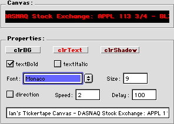

| Pros: Relatively simple. Very customizable. Scrolls fairly well. Cons: Not particularly useful. Is simple enough for most people to implement on their own without the class.
|
Ian's Tickertape Canvas
| Author: Ian L. Price: free Download: The RB bbq, Realbasic café (Hotline) |
Ian's Tickertape Canvas is a scrolling canvas. You give it a message, and it makes it scroll across the canvas in a variety of styles and colors–including shadowed.
To set it up, you create a canvas and set its super to Tickertape_Class. You then create a timer that calls one method in it: RefreshR(false). This scrolls the message across the canvas at the speed defined by the timer. Though it would be nice to have the canvas do all the scrolling on it's own, there's no way to integrate a timer into a class without using a thread, which wouldn't make a whole lot of sense for this class.
As you can see from the picture, you can customize the color of the background, text, and shadow. You can also set the direction, font, size, and style.
After you're done setting it up, the class performs fairly well. As you might realize, if you were to simply use the Graphics object's DrawString method each time, you'd have a canvas that flickered like nobody's business. The tickertape canvas cleverly works around this by putting the entire string in a picture, and then displaying only the neccessary parts. This makes the canvas scroll much faster.
However, after using this for a while, I realized something: This is cool, but it isn't very useful.
Think about it. How many times have you seen an application that put a side-scrolling text box to good use? They're often used for vertical scrolling credits, but the only thing I can think of that scrolls horizontally is a stock ticker, which isn't the most common thing in the computer world.
As I continued to realize this, I also noticed something else: this wouldn't be very hard to program myself.
Essentially, all that the tickertape class does is to scroll a picture–not a very difficult thing to do, even for a relatively new programmer.
In conclusion, Ian's Tickertape Canvas could be a good way to spice
up an about box, but otherwise, it's almost completely useless.
| Pros: Relatively simple. Very customizable. Scrolls fairly well. Cons: Not particularly useful. Is simple enough for most people to implement on their own without the class.
|